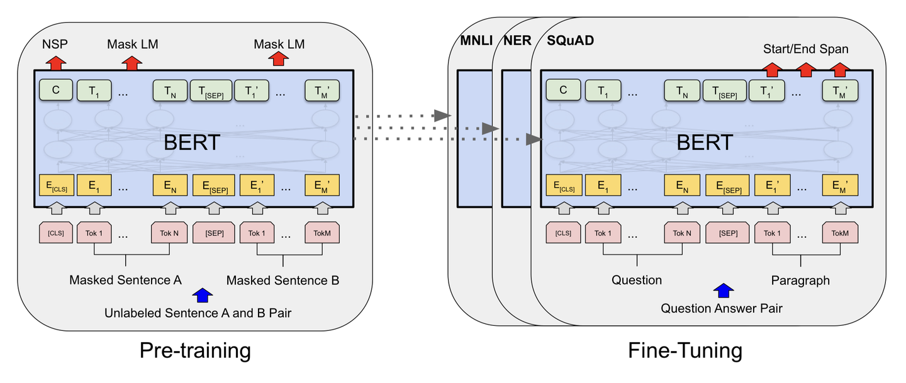

Project Demo 02
Visaidmath: Benchmarking Visual-aided Mathematical Reasoning
Core Member: NLP2CT Lab, Advisor: Dr. Derek F. Wong

Description: • Labeled the data within the framework to ensure clarity and usability and delivered processed and labeled datasets
Key Contributions:
- • Searched for and collected relevant data sources to support dataset construction.
- • Converted math problems from PDF files into structured JSON format.
- • Integrated converted data into the existing dataset framework for further processing.
Outcomes:
- Frontend size optimized to under 200KB, with mobile first-screen loading time reduced to under 1 second.
- Verified the model's usability and practicality in a real clinical environment.